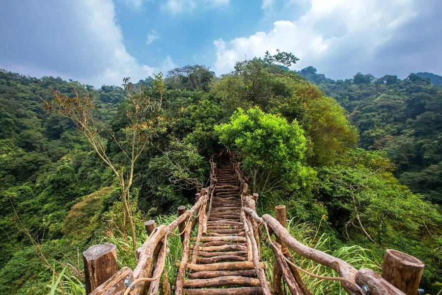

大坑風景區擁有自然生態、溫泉泡湯與便捷的交通，曾被選為台中前十大熱門旅遊景點，遊客絕不能錯過！
在大坑風景區，不僅可以欣賞美麗的自然風光，還可以體驗泡湯的樂趣。夏天盛產荔枝，秋天盛產柑橘，而秋冬季則是賞楓和泡湯的最佳時節，隨時都能感受到新鮮的活力。還有大坑風景區最具特色的景點即為12條登山步道，第1~8號步道自民國70年初開闢，依大坑山與溪流交錯的天然地形闢建而成，海拔最高為859公尺，即台中市最高點:頭嵙山。
9號步道於94年12月開拓，10號步道則於97年3月竣工，9-1號步道於102年11月建造完成。
